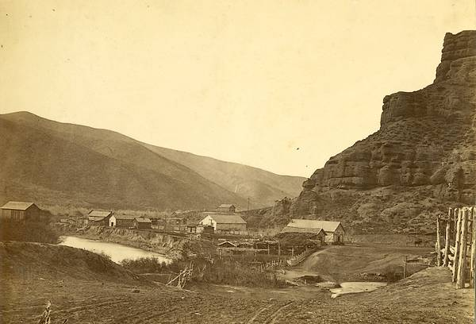

[[ Note du Traducteur : Thomas Stevens est le premier cycliste à avoir fait le tour du monde ; par la même occasion il est le premier cycliste à avoir traversé les Etats-Unis d'océan à océan ; les 4 premiers chapitres relatent sa traversée des Etats-Unis. ]]
A Travers la Terre des Mormons et par les Montagnes Rocheuses
Un pays à la triste mine, voilà ce qu'est le "Grand Désert Américain," [[ NdT : The Great American Desert était le nom, dans la première moitié du 19ème siècle, de la région à l'ouest de la rivière Mississipi. Au fur et à mesure de l'installation de la population sur les Grandes Plaines, la région dénommée Grand Désert Américain se rétrécit jusqu'à ne plus envelopper que les plaines de l'Utah et du Nevada. réf : https://goo.gl/ZDb806 ]] en Utah, dont je traverse la ligne de délimitation nord le matin suivant. Il y a une basse chaîne de collines arides à gauche de la route ; sur la droite, la plaine peu engageante, sur laquelle le regard erre en vain pour rencontrer un tant soit peu de verdure qui puisse conforter les espoirs d'une région moins désolée au-delà ; et par-dessus tout pèse une brume comme de la fumée, d'où Pilot Peak [[ NdT : le plus haut sommet de la chaîne de montagnes Pilot, chaîne à cheval sur l'Utah et le Nevada ]], à trente miles au loin, élève son sommet conique à 762 mètres au dessus du niveau de la plaine à ses pieds.
Il est possible de rouler sur quelques distances sur ce morne tronçon de région, mais il n'y a pas de tronçon praticable d'une traite, et la principale incitation à monter à bicycle est le sentiment de révolte contre une telle marche forcée. Une caractéristique notable en traversant le désert c'est la soif presque inextinguible que l'air salé sec vous inflige. En arrivant à une maison-de-service du chemin de fer [[ NdT : en anglais section-house, maison qui servaient au stockage du matériel pour l’entretien d’une section du chemin de fer, et également dans certains cas à l’hébergement des ouvriers chargés de cet entretien ; voir photo dans le chapitre 2. ]], je n'y trouve personne ; mais il y a une petite citerne enterrée avec de l'eau qu'on y a déversée, dans laquelle gigotent d'innombrables larves de moustique, mais qui par ailleurs est bonne et fraîche. Il n'y a rien à boire en dehors de ça, et l'eau est à un mètre sous le niveau du sol ; alors que je suis baissé pour tenter de boire, le support en bois qui est au-dessus cède et je suis précipité tête la première dans l'eau. Par chance, le réservoir est suffisamment large pour me permettre de me retourner et de revenir à la surface, la tête d'abord, et avec beaucoup de difficulté je grimpe au-dehors, avec, évidemment, plus un seul fil de sec sur moi.
A trois heures de l'après-midi je roule dans Terace [[ Ndt : fondée en 1869, c'est maintenant une ville fantôme ; il y avait une importante gare du Central Pacific Railway ]], une bourgade mormonne. Là un citoyen au regard plutôt dur, remarquant que mes effets sont humides, laisse entendre qu'aller à bicycle doit être un difficile labeur pour faire transpirer quelqu'un comme ça sous ce climat sec. A la maison-de-service du chemin de fer de Matlin [[ Ndt : fondée en 1869 par le Central Pacific Railway et abandonnée en 1904, c'est maintenant une ville fantôme ; il y avait une petite communauté d'ouvriers chinois du chemin de fer. le village comptait environ 30 habitants lors du passage de Thomas Stevens (sans compter les ouvriers chinois) ]] je m'accommode pour la nuit en compagnie d'un chef d'équipe très magnanime de cette maison-de-service, qui est hébergé temporairement au bâtiment des célibataires, pendant que sa femme est absente pour une visite à Ogden. De cette maison, qui est située sur le plateau des montagnes Red Dome, on arrive à avoir une vue plus complète du Grand Désert Américain que la dernière fois que nous l'avions contemplé. Il a toutes les apparences du lit mort d'un ancien lac salé ou d'une mer intérieure. Une large plaine plate d'alcali blanc, qu'on prend facilement dans l'obscurité à cette distance pour de l'eau douce, stagnante, s'étend au loin comme une mer morte, immobile aussi loin que le regard humain puisse porter dans la brume ; et ici et là, des rochers isolés dressent leurs têtes raboteuses au-dessus du sol désolé, comme des îlots dans la mer. On dit qu'il y a beaucoup de traces qui tendent à prouver que ce désert a été autrefois recouvert par les eaux de la grande mer intérieure [[ Ndt : mer intérieure qui recouvrait une partie des Etats-Unis et du Canada, il y a 100 millions d'années ]] qui encore, par endroits, baigne ses limites orientales de son flot saumâtre. Je suis informé qu'il y a de nombreux miles de marais salants durs, lisses, sur lequels un cycliste foncerait comme un oiseau en rase motte ; mais je ne me soucie guère de foncer en rase motte comme un oiseau au point de m'en préoccuper dans le Désert Américain. A quelques miles de Matlin la route mène sur un contrefort de la chaîne de Red Dome, d'où j'ai ma première vue du Grand Lac Salé, et bientôt je profite d'une baignade longuement anticipée, dans ses eaux saumâtres. C'est une baignade inconfortablement froide, mais sinon agréable. On ne peut qu'à peine s'enfoncer sous la surface tellement l'eau est gorgée de sel.
Terace, en 1875
Source https://www.nps.gov/parkhistory/online_books/blm/ut/8/sec2b.htm
Terace de nos jours
Source https://www.nps.gov/parkhistory/online_books/blm/ut/8/contents.htm
A l'heure du déjeuner, j'arrive à Kelton [[ Ndt : Kelton est maintenant une ville fantôme ; la ville fut fondée vers 1869 avec l'arrivée des ouvrier du chemin de fer de la compagnie Central Pacific. Cette même année un service de diligence fut établi entre Kelton et Boise en Idaho, qui se révéla très actif. Au début des années 1880 ce service fut fermé ce qui entraîna le déclin de la ville. ]] une ville qui autrefois prospérait au point que de grandes quantités de marchandises y étaient expédiées vers l'Idaho.
Dépôt de chemin de Kelton, en 1905
Source : https://www.nps.gov/parkhistory/online_books/blm/ut/8/contents.htm
Des vingtaines de chariots de marchandises sont maintenant entassés dans les enclos, faute d'utilité depuis la modernisation passant des mûles et des convois terrestres aux locomotives du Chemin de Fer de l'Utah du Nord [[ Ndt : le Chemin de Fer de l'Utah du Nord (Utah Northern Railway) était une compagnie de chemin de fer des mormons ; en 1878 elle était en faillite et fut acquise par la Compagnie Union Pacific. Source : https://en.wikipedia.org/wiki/Utah_and_Northern_Railway ]]. Des entrepôts vides et un air général de prospérité évanouie sont les trais principaux du Kelton d'aujourd'hui ; et les habitants semblent refléter dans leurs personnes l'aspect de la ville ; la plupart d'entre eux étant des manutentionnaires, qui, leur emploi disparu, traînent nonchalamment, comme s'ils était conscients de ne pouvoir servir à rien d'autre. De Kelton je suis la rive du lac, et à six heures de l'après-midi j'arrive aux salines, près de Monument Station, et je demande un logement, qui m'est aussitôt donné. Ici se dresse un moulin à vent, qui pompe l'eau du lac jusque dans des réservoirs peu profonds, d'où elle s'évapore en laissant au fond une couche de gros sel. Ces gens boivent une eau qui est désagréablement saumâtre et qui laisse à désirer pour celui qui n'y est pas habitué, mais dont ils disent qu'elle leur convient mieux, par la force de l'habitude, qu'une eau vraiment fraîche. Cet endroit est le plus propice, le plus favorable à la prolifération de certaines variétés d'insectes où je me sois jamais trouvé, et je passe ici la nuit la plus agitée que j'aie jamais passée ailleurs. Ces gens ont prétendu me procurer un lit, mais je n'ai pas plus tôt posé ma tête sur l'oreiller que je découvre la méchante plaisanterie qu'ils m'ont faite. Le lit est déjà densément peuplé d'invités, qui naturellement s'opposent à être délogés ou qu'on leur quitte de la place. Il semblent être joueurs et particulièrement espiègles, plutôt enclins à arriver à leurs fins par des blagues brutales qu'en recourrant à des mesures plus simples. Attendant jusqu'à ce que j'aie fermé les yeux dans une tentative de dormir, ils se glissent en haut et me piquent joyeusement sous le menton, ou s'activent autour de mon oreille, et bientôt ils se poursuivent sauvagement le long de mon dos, et jouent à saute-mouton et à cache-cache sur tout mon corps sensible, de sorte que je me lève au matin tout sauf revigoré par cette expérience.
Suivant encore les rives du lac, pendant quelques miles, ma route conduit maintenant vers la crête nord de la chaîne de montagnes de Promontory [[ NdT : chaîne de montagnes dans le comté de Box Elder, en Utah ]]. Sur ces montagnes, je trouve quelques miles de gravier dur qui m'offre le meilleur roulement que j'aie pu avoir en Utah, et je fonce aussi vite que possible, car de sombres, menaçants nuages, se rassemblent dans le ciel. Mais avant que j'atteigne le sommet de la crête un violent orage éclate sur les sommets, et il semble que je fraye avec le tonnerre et les éclairs, qui semblent être autour de moi plutôt que dans le ciel. Un troupeau de chevaux sauvages, effrayés et en débandade à cause des lueurs des éclairs et des éclats de tonnerre, arrivent en dévalant furieusement le chemin de montagne, menaçant de me piétiner dans leur course folle. Sortant mon six-coups, je tire quelques coups de feu en l'air pour attirer leur attention, moment où ils s'écartent rapidement sur la gauche, et traversent frénétiquement les monts dans leur fuite éperdue vers les plaines d'en bas.
La pluie tombe surtout sur la plaine et le lac, et quand j'arrive au sommet je m'arrête pour jouir du spectacle du lac et de la contrée environnante. Il aurait pu difficilement se présenter occasion plus propice. L'orage est passé, et loin sous mes pieds un magnifique arc-en-ciel enjambe la plaine, et plonge une extrêmité de sa beauté panachée dans les eaux bleu ciel du lac. De cet endroit le panorama vers l'ouest et le sud est imposant - des chaînes de montagnes sauvages, irrégulières, traversent la région, dressées sous tous les angles concevables, et parmi et autour d'elles le lac serpente, remplissant de ses eaux bleues les espaces intermédiaires, et reflétant, impartialement montrées, leur beauté majestueuse et leurs failles. Quels rêves d'empire et de commerce à la voile sur cette mer intérieure doivent remplir l'esprit et enflammer l'imagination du converti mormon récemment arrivé [[ Ndt : les premiers établissement permanents dans la vallée du Grand Lac Salé datent de l'arrivée des mormons (Eglise des Saints des Derniers Jours) en 1847 ]] qui, se tenant sur le plus haut sommet de ces montagnes, se régale les yeux de ce panorama grandiose d'eau bleue et de montagnes à la beauté brute étendu devant lui comme une image paradisiaque ! Sans doute, s'il a un penchant à la dévotion, ne manquera-t-il pas de lui revenir à l'esprit une autre mer intérieure dans la lointaine Asie Mineure, sur les rives de galets de laquelle et par les vagues ondoyantes de laquelle le berceau d'une religion plus ancienne que le mormonisme fut bercé, mais pas bercé pour s'assoupir.
Dix miles plus loin, depuis la position stratégique d'un passage sur un autre éperon de la même chaîne, on a une vue du vaste panorama de la région vers l'est. Sur presque trente miles depuis le pied des pentes, des vasières au niveau du sol s'étendent vers l'est, longées au sud par les rives sinueuses et marécageuses du lac, au au nord par la chaine de montagnes de Blue Creek. A trente miles à l'est - vues de cette distance, elles ressemblent étrangement à des troupeaux de moutons au pied des montagnes - on peut voir les maisons peintes en blanc des communautés mormones, qui parsèment abondamment la bande étroite mais fertile de terres agricoles entre la Rivière Bear et les puissantes montagnes Wahsatch, qui, élevant leurs crêtes enneigées vers le ciel, font obstacle à tout regard sur ce qui se trouve au-delà. Depuis cette hauteur les vasières donnent l'impression qu'on pourrait enjamber son bicycle et foncer à travers à une moyenne de dix miles ; mais ce serait une heureuse surprise si je pouvais seulement ajouter dix miles de cyclisme sur les trentes à traverser. Aussitôt après avoir rejoint le fond de la vallée je fais la connaissance des minuscules moucherons noirs contre lesquels un de nos amis privés de whisky m'avait mis en garde. On a la tête en permanence enveloppée d'un nuage noir de ces petits misérables. Ils sont de proportions infinitésimales, et s'introduisent dans les oreilles, les yeux, les narines des gens, et si on s'aventure inconsidérément à par exemple ouvrir la bouche, ils s'y engouffrent comme s'ils la prenaient pour "les portes du paradis entrouvertes," [] en anglais : 'the pearly gates ajar', sans doute citation de, et allusion au roman religieux The Gates Ajar, de l'écrivain et féministe américaine Elisabeth Stuart Phelps, publié en 1868, et aussitôt immensément populaire ; ref : https://en.wikipedia.org/wiki/The_Gates_Ajar ]] et cette occasion comme leur dernière chance d'y entrer. Mêlés à eux, et apparemment dans les meilleurs termes, on a des nuées de moustiques, qui ont l'air de géants en comparaison avec leurs associés à la mauvaise réputation.
Famille de mormons, vers 1869
Comme pour compenser en partie mes tourments de l'après-midi, Dame Fortune me traite avec des égards sous forme de deux repas aux saveurs différentes et dispensés dans cette après-midi. J'avais l'intention, quand je quittai Promontory Station, de rejoindre Corinne pour la nuit ; en conséquence de quoi j'apportais un en cas avec moi, sachant que ça me mènerait tard pour y arriver. Ces jours-ci, je suis pertubé par un appétit qui me met le rose aux joues d'en parler, et sur les cinq heures, je m'assieds - sur le squelette blanchi d'un défunt moustique! - et me mets à manger mon repas de pain et de viande - et de moucherons ; car je suis tout à fait certain de manger des centaines de ces omniprésentes créatures à chacune des bouchées que je mords. Deux heures après je passe à hauteur de la maison-de-service du chemin de fer à Quarry, quand le contremaître me fait signe et m'invite avec générosité à rester pour la nuit. Il sort des huitres en conserve et des bouteilles de bière de Milwaukee, et insiste pour que je l'aide à faire un sort à ces mets savoureux ; laquelle invitation inutile de le dire j'y cède sans trop me faire prier, le fait d'avoir mangé deux heures avant ne constituant guère un obstacle. Voila pour le cyclisme comme aide à la digestion. En arrivant à Corinne [[ Ndt : Considérée de sa fondation jusqu'en 1879 comme la capitale non-officielle des non-mormons de l'Utah, Corinne a été fondée en 1869 par d'anciens officiers de l'Armée de l'Union et des commerçants non-mormons, pour compétir économiquement et politiquement contre les mormons de l'Utah ; la construction du chemin de fer de l'Union Pacific conduisit à l'abandon de la ville par les commerçants non-mormons ; les terrains furent rachetés par des mormons et la ville devint une nouvelle implantation mormonne. ]], sur la Rivière Bear, à dix heures le matin suivant, je suis accosté par un mormon barbu, patriarcal, qui me demande de faire une parade à moi tout seul, et de rouler à bicycle autour de la ville pour l'édification de la population.
" B'sûr qu' savent c'qu'est un 'perlocypède', les ont vus en images ; mais ont jamais vu un' vraie machine, et ça s'rait un sacré plaisir pour eux," tel est l'appel lancé par cette personne en faveur des Corinnethians, sur les destinées et le bonheur desquels il apparaît présider avec une sollicitude paternelle. Comme les rues de Corinne cette matinée consistent entièrement en une boue noire à la profondeur incertaine, je suis contraint à contre-coeur de dire non au patriarche, lui promettant en même temps que s'il a les rues en meilleure condition la prochaine fois que je suis dans les environs, je seconderai volontiers sa brillante idée de rendre les gens heureux en leur offrant un aperçu de mon "perlocypède" en action.
Corinne, en 1869
Après avoir traversé la Rivière Bear je me retrouve sur une sorte de route de première qualité conduisant à travers les implantations mormonnes jusqu'à Ogden.
On ne peut vraiment imaginer plus grand contraste que celui présenté par cette partie de la région située entre le lac et la chaîne de montagnes Wasatch, et la région désertique vers l'ouest. On peut presque s'imaginer soudain transporté par quelque bon génie dans une paisible communauté agricole d'un Etat de l'est. Au lieu de chevaux sauvages indomptés et de bétail à l'air paniqué, errant selon leur propre volonté sur un territoire illimité, on voit de sages chevaux de trait tirant la charrue dans les champs, et les vaches laitières racées broutant paisiblement de l'herbe entretenue, dans des prairies clôturées. Des oiseaux sont en train de chanter joyeusement dans les haies de saules et sous l'ombrage des arbres ; des champs verts de luzerne et de céréales arrivant à mâturité bordent la route et se propagent eux-même sur la contrée environnante en carrés qui se succèdent en alternance,comme ceux d'un vaste échiquier. Les fermes, en général, sont petites, et, en conséquence, les maisons ont un côté intime ; et pas une parmi toutes ces maisons qui ne soit entourée de la verdure d'un verger et d'arbres feuillus mêlant harmonieusement leurs feuilles vertes et leurs fleurs blanches. A midi je roule dans une forêt d'arbres fruitiers, parmi lesquels, m'informe-t-on, se situe Willard City ; mais on ne voit rien qui s'apparente à une ville. Rien sauf des bosquets de pêchers, de pruniers et de pommiers, tous en pleine floraison, entourant l'endroit où je fais halte et commence à chercher à l'entour des traces de la ville. "Où est Willard City?" m'enquiers-je auprès d'un garçon qui sort d'un des vergers en portant dans les bras un bidon de kérosène, ce qui laisse penser qu'il venait d'une épicerie, et c'était justement le cas. "C'est Willard City, juste ici," répond le garçon ; et, en réponse à ma question quant à un hôtel, il désigne une petite barrière donnant accès à un verger, et me dit que l'hôtel s'y trouve. [[ Ndt : Willard City est une implantation mormonne depuis 1851 ; au moment du passage de Thomas Stevens, la ville compte environ 420 habitants ( 1800 de nos jours ) ; depuis sa fondation, elle tire principalement ses revenus de l'exploitation fruitière. ]]
Willard, fin du 19ème siècle
L'hôtel - comme chaque maison et boutique ici - est au milieu d'un bosquet d'arbres fruitiers en fleurs, et ressemble à tout sauf à une auberge bon marché. Aucune enseigne, rien pour la distinguer d'une habitation privée ; et je suis introduit dans un salon joliment meublé, duquel sur les murs au papier peint impeccable sont accrochés de grands portraits de Brigham Young et autres célébrités mormonnes, alors qu'une grande bible mormonne, coûteusement reliée en maroquin [[ Ndt : cuir de bouc ou de chèvre ]], repose au centre de la table. Une charmante demoiselle dans l'adolescence préside à une table privée, sur laquelle est étalé à ma satisfaction le plus fin repas que j'aie fait depuis que j'ai laissé la Californie. Quel pain blanc comme neige! Quel beurre délicieux! Et la délicieuse saveur de la compote de pêche aux épices me reste encore maintenant dans la bouche ; et comme si ce n'était pas assez pour "deux bits" [[ NdT : two-bit, expression datant de l'époque de la colonisation aux USA et restée dans le langage avec le sens de un-quart de dollars – Source http://en.wikipedia.org/wiki/Bit_(money) ]] (cinquante pour cent moins cher que les tarifs pratiqués habituellement dans les montagnes), un splendide bouquet de fleurs est disposé au centre de la table pour compléter le repas de leur heureux parfum. Alors que j'apprécie cette nourriture saine et substancielle, je me mets à songer au gouffre profond qui sépare le repas élégant que j'ai en cet instant devant moi et le "Amélicain plancake" [[ Ndt : voir l'anecdote du chapitre deux, du pancake préparé par un Chinois ]] d'il y a deux semaines.
"Vous avez ici une contrée remarquablement agréable, Mademoiselle," m'avancè-je à faire remarquer à la jeune dame qui avait présidé ma table, et dont j'estimais qu'elle devait être la fille des maîtres des lieux, alors qu'elle vient à la porte pour voir le bicycle.
"Oui ; nous l'avons rendue agréable en y plantant tant de vergers," répond-elle, avec modestie.
"Je pense que les Mormons devraient s'en satisfaire, car ils possèdent le seul bon morceau de pays agricole entre la Californie et 'les États'" [[ Ndt : Thomas Stevens se réfère sans doute aux 13 Colonies, groupe de colonies britanniques de l'est de l'amérique -bordure atlantique- du nord qui se sont déclarées indépendantes en 1776 et ont formé les Etats-Unis ]], continuais-je maladroitement.
"Je n'en ai jamais entendus qui ne soient pas satisfaits, sauf leurs ennemis," réplique cette belle et vaillante championne du mormonisme d'une voix qui montre qu'elle se méprend complètement sur le sens de mes propos.
"Ce que je voulais dire, c'est que les mormons doivent être fortement félicités de leur bon sens pour s'être installés ici," m'empressè-je d'expliquer ; car si je devais quitter cette maison, où j'ai été reçu de façon si gratifiante, avec le soupçon d'un préjugé contre les mormons, je m'en voudrais à travers tout le Territoire. Les femmes de religion mormonne sont formées par les bonimenteurs de l'église à rallier à leur cause les étrangers par un traitement chaleureux et par le charme de leur conversation et de leurs attentions ; et cette jeune dame a bien appris la leçon ; elle a obtenu son diplôme avec les honneurs. Venant des déserts arides du Nevada et de l'ouest de l'Utah, du pays ou l'irrévérencieux et irrépressible "Vétéran" [[ Ndt : sans doute une allusion aux premiers colons de la conquête de l'ouest ]] remplit l'air d'une odeur sulfureuse de vulgarité et où la nature est vue sous son visage le plus austère, et soudainement se retrouver littéralement entouré de fleurs et conversant avec une beauté sur la religion, voilà de quoi séduire le coeur d'une statue de marbre.
J'atteins Ogden pour le souper, où j'espère bien trouver un cycliste ou deux (Ogden étant une ville comptant huit mille habitants) [[ Ndt : fondée en 1846 par un trappeur, le site a été acheté par des colons mormons en 1847 ; Ogden comptait 8000 habitants lors du passage de Thomas Stevens ]] ; mais ce qui se rapproche le plus d'un cycliste à Ogden c'est un gentleman qui fait partie d'un club de Chicago, mais a négligé d'apporter son "chariot bâché" [[ le texte dit "wagon West" ; il s'agit de ces lourds chariots bâchés - qu'on peut voir dans les western - utilisés par les migrants vers par exemple la Californie. une note d'humour de Thomas Stevens ! ]]. 12 miles [[ Ndt : 19 kilomètres ]] alternant cyclisme et marche en direction de l'est depuis Ogden m'amènent à l'entrée du Canyon Weber, à travers lequel le Fleuve Weber, le Chemin de Fer de l'Union Pacific et une piste pour chariots à l'état précaire tracent leur chemin à travers les Montagnes Wahsatch vers les plateaux élevés du Territoire du Wyoming [[ Ndt : le Wyoming était un territoire incorporé aux Etats-Unis jusqu'en 1890, année où il fut admis comme Etat ]]. Les uns après les autres, les points d'intérêt se suivent rapidement le long de cette partie du voyage, et j'ai largement le temps de les observer, car le Fleuve Weber inonde le canyon, et à de nombreux endroits a emporté l'espace étroit le long duquel les chariots passent habituellement, de sorte que je dois cheminer lentement le long de la voie ferrée. Maintenant le chemin tourne à gauche, et en quelques minutes les parois pittoresques et à la beauté sauvage du canyon s'imposent de toute leur hauteur, dressées vers les nuages. Le Fleuve Weber coule à toute allure - un torrent brutal - sous les ombres crépusculaires des montagnes à travers lesquelles il court pendant cinquante miles [[ Ndt : 80 kilomètres ]] et poursuit sa course sur la plaine en bas, ou il adopte un rythme plus paisible comme si conscient d'avoir survécu à l'agitation effrénée de son avance tumultueuse le long de la montagne.
Ogden
En progressant dans le gouffre béant de la chaîne de montagne, on entend continuellement au devant l'écho d'un grondement, qui se fait plus fort alors que je poursuis vers l'est ; rapidement la source du bruit est découverte, et un tableau singulier accueille mes yeux extasiés. A un endroit où le flot est énorme, les eaux sont contrariées dans leur avance par un entassement désordonné d'énormes roches de toutes les formes, qui à un moment ce sont détachés plus haut sur les parois, et se sont écrasées dans le lit du courant. Le flot tulmutueux, venant d'en haut avec force, semble se jeter avec une fureur insensée contre les roches qui osent ainsi faire obstacle à son passage ; et dans les moments qui suivent, tout est crachement, bouillonnement, un chaudron de lutte, les eaux folles semblant fondre d'un ennemi sur l'autre avec une furie toujours croissante, maintenant bondissant au-dessus de l'un seulement pour se lancer dans un nuage d'éclaboussures contre un autre, ou se déversent comme une cataracte contre son pied dans une lutte continuelle et sans fin pour le saper ; tandis qu'au dessus de tout cela se dressent les rochers sombres, noirs, témoins sinistres de la bataille. Cet endroit est connu à juste titre sous le nom de "La Porte du Diable."
Devil Gate
Partout où les parois du canyon s'éloignent du bord du fleuve, et laissent un espace de terre cultivable, là les industrieux mormons ont construit des cabanes en rondins ou en adobe [[ Ndt : brique faite de terre séchée au soleil ; désigne aussi la brique de terre et de paille mélangées. Au 19ème siècle, aux Etats-Unis il y a eu de véritables maisons aux murs de briques de terre uniquement, avec parfois même un étage. ]], et converti les terres environnantes en fermes, jardins et vergers. Dans une de ces rares implantations je cherche refuge contre une averse dans la maison d'un mormon "trois couches" [[ Ndt : un mormon avec trois épouses ; une couche désigne un lit ]] et suis présenté à ses trois "moitiés" séparées et distinctes ; ou, plutôt, devrait-on dire "quarts," parce que comment quelque chose peut-il avoir trois moitiés ? Une caractéristiques notables de toutes ces fermes c'est la présence générale de femmes autour des maisons, et quelquefois dans les champs. C'est une scène courante dans n'importe qu'elle communauté agricole une femme dans les champs, visitant son mari, ou, peut-être l'assistant dans ses durs travaux. La même chose est observable dans les implantations mormonnes le long du Fleuve Weber sauf, qu'au lieu d'une femme, elles sont généralement deux ou trois, et peut-être encore une autre sur le seuil de la maison.
Traversant deux tunnels qui se frayent un chemin à travers des éperons rocheux qui s'étendent à travers le canyon, comme pour entraver toute progression, de l'autre côté de la rivière, sur la droite, voilà le "Toboggan du Diable" - , deux murs de roche se dressant à angle droit du sol, qu'on dirait faits par la main de l'homme, s'étirant en lignes parallèles presque de la base jusqu'au sommet d'une montagne pentue, recouverte d'herbe. Les parois ne sont qu'à une douzaine de pieds [[ Ndt : environ 3m70 ]] d'écart l'une de l'autre. C'est une curiosité, mais seulement une parmi de nombreuses autres qu'on trouve régulièrement tout au long d'ici.
Devil Slide
Un peu plus en avant et je passe le fameux "Arbre des Mille-miles", un pin rude, qui se trouve entre le chemin de fer et la rivière, et qui a gagné sa renommée en se dressant juste à mille miles - 1600 kilomètres - d'Omaha [[ Ndt : il s'agit de la ville d'Omaha dans le Nebraska, qui était alors le Terminus Est du chemin de fer transcontinental ; Après mille miles de construction du chemin de fer vers l'ouest, les ouvrier de l'Union Pacific Railway sont arrivés à côté de l'arbre précité, d'où le nom de celui-ci comme le dit T. Stevens. ]] Cet arbre mène actuellement une dure lutte pour survivre ; un côté de son tronc honoré est comme frappé de la lèpre. Le sort de l'"Arbre des Mille-miles" est scellé sans rémission. C'et malheureux d'être la cible la plus voyante de la ligne pour le féroce jeune qui vient de l'Ouest avec un révolver dans la poche et tire sur des cibles depuis la fenêtre du wagon. A en juger par la quantité de plomb froid accumulé de ce côté de son tronc vénérable près de la voie de chemin de fer peu de ces tireurs irréfléchis passent sans l'honorer d'un tir.
le Thousand Miles Tree en 1869
Emergeant du "goulet" du canyon Weber, la route continue à travers un espace moins étroit jusqu'à Echo City [[ Ndt : Petit village de l'Utah, mais qui était un point important pour le chemin de fer de l'Union Pacific ; le village était un point de ravitaillement en charbon et en eau pour les trains, et abritait de nombreuses infrastructure ferroviaires. ]], un endroit de deux-cent-vingt-cinq habitants, majoritairement des mormons, où je reste pour la nuit. L'hôtel où je suis logé propose tout ce qu'on peut désirer, dans la mesure où ça concerne la nourriture ; mais le propriétaire, bel homme et pittoresque semble affligé de diverses habitudes excentriques, sa première excentricité étant un dédain hautain pour la menue monnaie. N'ayant pas eu l'occasion de le tester, il est difficile de dire si cette particulatité marche dans les deux sens, ou seulement quand le change est dû à ses clients de passage. Toutefois nous lui donnons de bon coeur le bénéfice du doute.
Echo City vers 1870,
environ 5 ans avant que l'Union Pacific en fasse un point de ravitaillement ferroviaire

Le matin suivant des nuages chargés de pluie recouvrent les montagnes et ajoutent à l'obscurité de la gorge, qui, juste à l'est d'Echo City, se resserre et poursuit vers l'est sous le nom d'Echo Gorge. Dans un virage autour d'une imposante saillie rocheuse, la très célèbre "Pulpit Rock" [[ Ndt : traduction en français : "Chaire Rocheuse". ]] se dresse en surplomb, sur laquelle on rapporte que Brigham Young s'est tenu et prêcha aux fidèles mormons alors qu'ils faisaient halte un dimanche sur ce site, pendant leur pélerinage à leur nouveau foyer dans la Salt Lake Valley en aval. Le redoutable prophète aurait-il été pris de vertige pendant qu'il harangait ses troupes du haut de la cime de son originale chaire, qu'il serait au moins mort d'une mort plus romantique que celle dont il est accrédité - d'avoir mangé trop de maïs pas mûr. [[ Ndt : Brigham Young, Président de l'Eglise de Jésus Christ des Saints des Derniers Jours (mormons) de 1857 jusqu'à sa mort en 1877. ]]
Pulpit Rock
Brigham Young
14 miles plus en avant m'amènent à "Castle Rocks" [[ Ndt : traduction en français "Chateau de Rochers". ]], un nom donné au promontoire de grès qui forme le côté gauche du canyon à cet endroit, et qui a été érodé par les éléments en une sorte de formes fantastiques, nombre d'entre elles rappelant de façon si frappante les tours et les tourelles de quelque chateau du vieux monde, qu'il ne manque que l'apparat des anciens temps des chevalies errants pour compléter l'illusion. Mais, alors qu'on contemple avec admiration ces immenses arcs-boutants de la nature, il est facile de réaliser que les plus massifs et imposants chateaux féodaux ou remparts construits des mains de l'homme, paraîtraient des jouets d'enfant à côté d'eux.
Castle Rock
Page précédente - Page suivante
ADMINISTRATIVIA
Dernière mise à jour de cette page : 19 avril 2017
URL : http://orkic.github.io/bicygonzo/atwoab/chap3/idxdeux.html
Contactez-nous : Contact
Website © Copyright - ef. Bicy Gonzo.